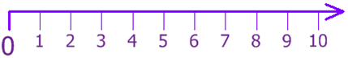

This chapter provides you with opportunities to visualize numbers from 10 001 to 100 000. It also allows you to determine the place value and value of a digit in numbers up to 100 000, which is necessary to be able to read and write numbers in both symbols and words. Rounding numbers which will aid you in developing your skill in estimation is also included. This chapter also lets you extend you knowledge and skills in comparing and ordering whole numbers, skills which you have learned in the previous grades.
First, What is Whole Number? ? ?
The numbers in set {0, 1, 2, 3, 4, 5, 6, 7, 9, 10, . . .} are called whole numbers
There is no fractional or decimal part. And no negatives.
In other words, whole number is the set of all Counting Numbers plus zero.
Example: 5, 49 and 980 are all whole numbers.